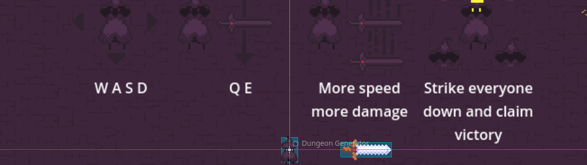

Infinite Swing
This is a game that I worked on for the GMTK 2025 4 day gamejam hosted on itch.io. This was my second game made in Godot and really helped me expand on other aspects of game development and design I had not previously taken the time to improve. This ranges from using new nodes in Godot to expand on my knowledge of the game engine but also art animation and sound effects.
In this short demo found on my itch.io page you swing a large sword around your body using magic to rotate it either clockwise or anti-clockwise. While rotating it gradually builds up speed. Others in the dungeon also have the same ability as the player, so to combat them you need to be carful of your position or rotate your sword faster and knock it out of the enemeis hands letting you deliver the final blow.
Making this project in the short time frame was extremely challenging however also fun and rewarding as it allowed myself to learn much more about creating a better presentation for a game. This project required animation and drawing both of which I had never expanded in my skillset. Making this in such a short time frame really pushed my art skills, however for my first time animating I am extremely happy with how it came out and am super excited to work on projects in the future where I can further improve the presentation of my games.
During development for this project, I had to learn and implement aspects not previously featured in my previous projects:
- Hand Animation- I had introduced my self to animation and drawing using Aseprite to create the player, enemy and sword assests as wel as alter assets from a dungeon asset pack.
- GDscript/Godot- I had once again greatly expanded on my knowledge and expertise when it came to GDscript and Godot through the use of rigidbodies to play around with physics in this new engine. Through this project I have been able to become much better and more efficient when programming in Godot.
- Audio Design- During this project I beleive I have gotten much better at using audio in my games. I had even altered audio a little to fit my needs, something not previously in my skillset
- Godot UI nodes.
Feel free to play the game yourself for free on my Itch page in your browser:
Link to the games Itch.io page.